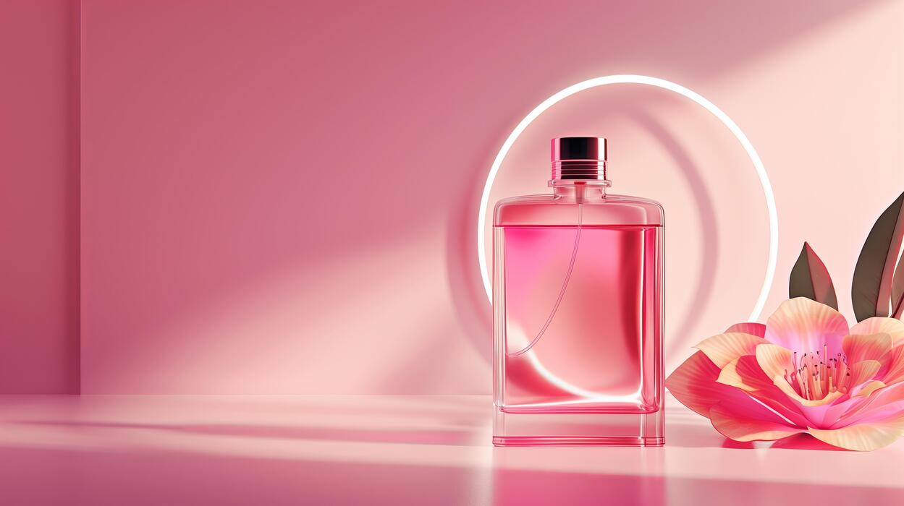

Our Story.
A maison of niche perfumery, founded on a single patient idea — that every season carries its own scent, and that scent deserves to be honoured with rare materials and unhurried craft.
QUATRÉA began with a single observation: that no two seasons smell the same — and that this difference is worth keeping.
 Hélène Mercier · Grasse
Hélène Mercier · Grasse
"I did not want to make a perfume that smells of everything. I wanted to make a perfume that smells of one moment — and to make four of them, one for each season of the year."
Trained at the Institut Supérieur International du Parfum in Versailles, Hélène Mercier spent twelve years in the houses of Grasse and Florence before founding QUATRÉA. She works alone — composing, evaluating, and bottling each fragrance herself, with no committee and no brief.
A perfume is the most intimate of luxuries.
Invisible, yet unforgettable. Worn on the skin, shared only with those we let close. We believe a perfume should be composed with the same care one would give to a letter — slow, specific, and impossible to mistake for anyone else's.
We work in small batches. We age our compositions. We bottle by hand. We do not chase trends, and we do not reformulate. The perfume you buy today is the perfume your grandchildren will be able to buy tomorrow.
Four movements, one bottle.
Harvest
Each season, Hélène travels to the field — pear orchards in Provence, fig groves on the Mediterranean, cedar forests in the Luberon, the high Alps in winter — to harvest the raw materials herself.
Distillation
In the atelier in Grasse, the materials are distilled, tinctured or extracted by hand — using copper alembics, linen filters, and patience. No solvents. No shortcuts.
Composition
The composition is built over months — note by note, in small glass vials — and aged in dark glass for a full lunar cycle, allowing the essences to marry.
Bottling
Each bottle is filled, corked, numbered and signed by hand. The linen-lined case is tied with a waxed cotton cord, and dispatched within seven days of the order.
Discover the collection.
Four fragrances, one for each season of the year. Available in 50ml and 100ml Eau de Parfum, hand-numbered and bottled in Grasse.